충북 청주시 이선영(39)씨 · 자녀 6세·2세
“다른 구의 아동병원까지 차로 20분을 갑니다.”
어린이집을 구하기 어려워 결국 이사를 결정했습니다. 아이 곁에 마음껏 뛰어놀 놀이터와 안심하고 맡길 보육 공간이 남기를 바랐습니다.
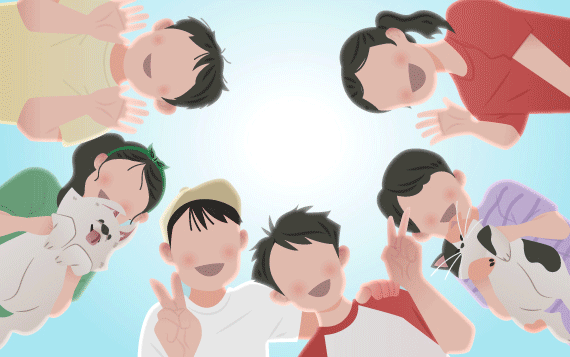
오늘도 아이들은 태어납니다. 이 아이는 어떻게 자랄까요.
아이들이 다시,
조금 더 태어나기 시작했습니다.
하지만 그 아이들이 자랄 교실
보호 받을 병원, 같이 놀 친구들은
똑같이 늘고 있을까요?
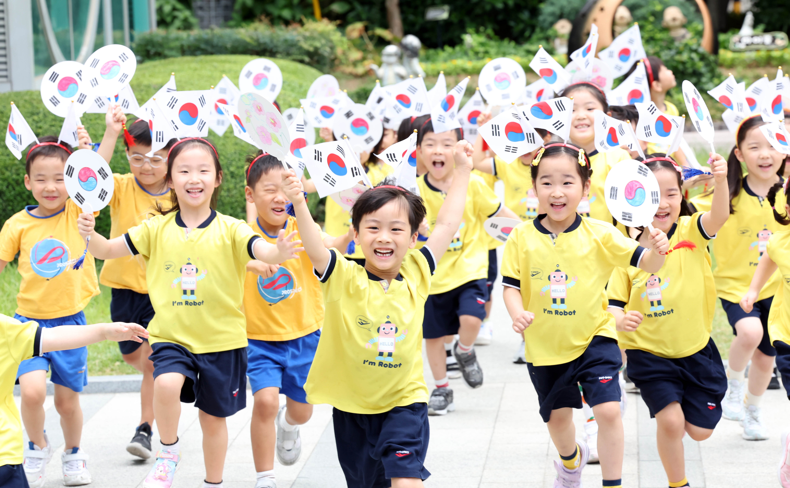
스크롤을 내릴수록 시야가 넓어집니다. 아이를 둘러싼 네 개의 생활권도 함께 보입니다.
국가데이터처에 따르면 2026년 5월 출생아 수는 1년 전보다 13.6% 늘었습니다. 출생아 증가는 23개월째 이어졌습니다. 반가운 변화입니다.
다만 출생아 증가가 아이의 생활권 회복을 곧바로 뜻하지는 않습니다. 아이가 자랄 여섯 해 동안 학교와 병원, 돌봄 공간은 다른 방향으로 움직일 수 있습니다.
출생아 수의 반등과 이미 학령기에 들어선 아이 수의 변화는 서로 다른 시간대의 지표입니다. 반등이 생활 기반의 회복으로 이어지는지 따로 살펴봐야 합니다.
출생아 반등은 반가운 변화입니다. 다만 아이가 생활하는 환경까지 같은 속도로 회복된다는 뜻은 아닙니다.
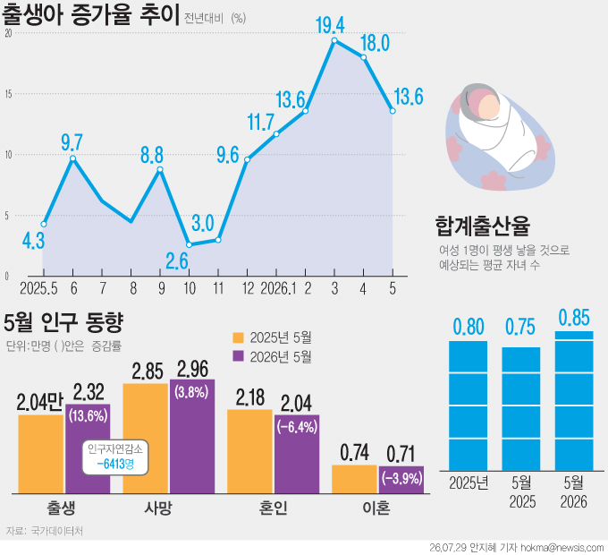
출생아 반등이 생활권 회복으로 이어지는지는 아이 곁의 병원, 돌봄 공간과 학교를 따로 살펴봐야 알 수 있습니다.
서울과 경기, 충북과 전북에 사는 부모 12명에게 직접 물었습니다.
“아이 곁에 마지막까지 반드시 남았으면 하는 것은 무엇인가요?”
사는 곳과 아이의 나이는 달랐지만, 대답은 세 개의 생활권으로 모였습니다.
“다른 구의 아동병원까지 차로 20분을 갑니다.”
어린이집을 구하기 어려워 결국 이사를 결정했습니다. 아이 곁에 마음껏 뛰어놀 놀이터와 안심하고 맡길 보육 공간이 남기를 바랐습니다.
“아프면 조급한 마음이 생겨요.”
상태가 좋지 않으면 다산의 달빛어린이병원을 찾습니다. 대중교통 왕복 1시간. 맞벌이 부부에게는 야간 진료가 가능한 병원이 기준이 됩니다.
“마지막까지 남았으면 하는 것은 학교입니다.”
소아과는 차로 10분이지만 인도가 이어지지 않아 걸어갈 수 없습니다. 보육 뒤 놀이터에서 만나는 또래도 거의 없다고 했습니다.
“친구와 자연환경은 남았으면 합니다.”
동네 소아과는 도보 5분, 친구도 종종 만납니다. 이 동네에서 계속 아이를 키울 수 있을지 고민한 적은 없습니다. 그가 먼저 떠올린 것은 녹지와 생태계 훼손이었습니다.
“놀이터와 공원, 도서관과 운동장은 남았으면 합니다.”
동네 소아과는 걸어서 5분이지만 소아 응급병원은 가장 멀게 느껴지는 시설이었습니다. 하원 뒤 놀이터에서 노는 아이도 보기 어려워졌다고 했습니다.
“공원 대신 아파트 단지 안을 이용합니다.”
도서관과 문화센터에서는 또래를 자연스럽게 만나지만 가까운 공원과 학원가는 부족하다고 느꼈습니다. 서로 다른 배경의 이웃과 편견 없이 어울리며 마음이 건강하게 자랄 환경인지도 생각하게 됐습니다.
“놀이터는 아이들이 마음 편히 놀 수 있는 공간이어야 합니다.”
근처 소아과가 사라져 가벼운 증상은 이비인후과에서, 심해지면 평촌의 소아과에서 진료받습니다. 문을 닫은 어린이집이 늘었고 집 앞 놀이터에서는 또래를 만나기 어렵다고 했습니다.
“공원과 대학병원은 마지막까지 남았으면 합니다.”
병원은 걸어서 15~20분 거리에 있고 학교와 아파트도 가깝습니다. 그러나 어린이 체육 프로그램은 적고 경쟁은 치열합니다. 친구가 가까이 살아도 학원과 개인 일정에 맞춰 약속해야 만날 수 있습니다.
“아이 곁에 소중한 친구 둘, 셋은 남았으면 합니다.”
소아과는 집에서 5분 거리지만 예약과 긴 대기가 필요합니다. 어린이집과 유치원의 아이 수가 줄었고 놀이터에서 노는 초등학생도 보기 어려워졌습니다. 또래를 만나려면 부모가 먼저 자리를 만들어야 한다고 했습니다.
“아이들이 자유롭게 뛰어놀 자연과 또래 친구, 사회성이 남았으면 합니다.”
친구들은 오후 3~4시 하원하자마자 학원차를 타고 떠납니다. 놀이터에서 아이를 보기 어려워졌고, 부모 없이 밖에서 놀게 하기에는 위험이 걱정됩니다. 사람과 부딪치며 자연스럽게 배우던 사회성까지 줄어드는 것 같다고 했습니다.
“병원과 학교는 가까이 남아 있지만, 아이가 다녔던 어린이집은 사라졌습니다.”
병원과 학교 접근성은 비교적 좋은 편이지만 아이가 실제로 다녔던 어린이집은 없어졌다고 했습니다. 모든 생활 기반이 한꺼번에 사라지는 것이 아니라, 아이의 일상 가까이에 있던 시설부터 하나씩 빠져나갈 수 있다는 경험이었습니다.
“아이가 커지면 놀이터에서도 자기 자리를 찾기 어렵습니다.”
놀이터는 주로 어린아이들의 공간이 되고, 초등 고학년이 편하게 머물 곳은 부족하다고 했습니다. 맞벌이 가정에서는 결국 학원에 의존하게 되고, 다른 동네의 교육시설도 차량이 없으면 이용하기 어렵습니다. 오래 다닌 소아과 역시 단순한 병원이 아니라 아이의 성장과 진료 이력을 아는 관계라고 했습니다.
사는 곳도 아이의 나이도 달랐지만,
부모들의 대답은 비슷했습니다.
이들이 꼭 필요하다고 꼽은 답변을 세 개의 생활권으로 읽었습니다.
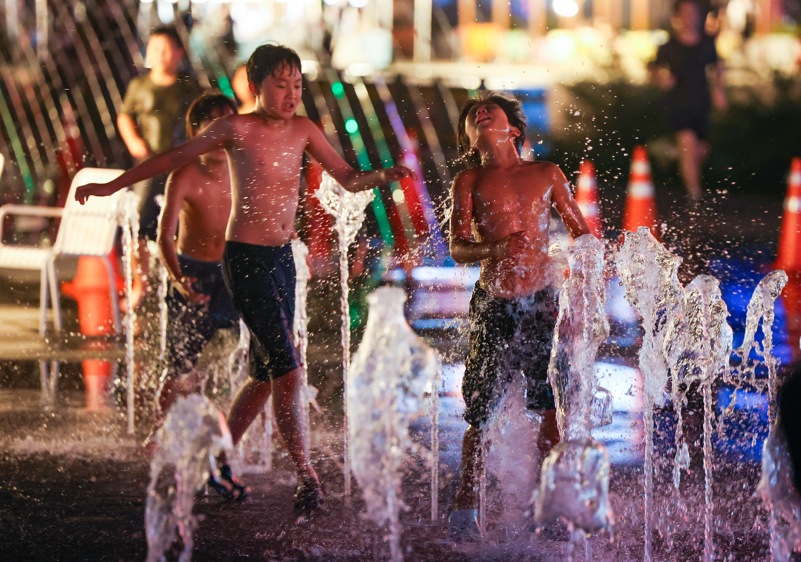
도심 분수에서 물놀이하는 어린이들. 사진=뉴시스청주와 고양, 서울 구로와 안양, 전주와 남양주의 보호자들은 놀이터와 공원, 친구와 자연환경을 함께 말했습니다. 공원이 멀어 아파트 단지를 대신 이용하거나, 하원 뒤 놀이터에서 또래를 보기 어려워졌다는 답도 나왔습니다.
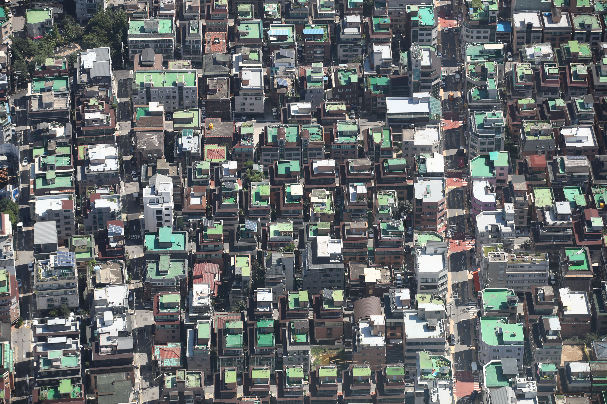
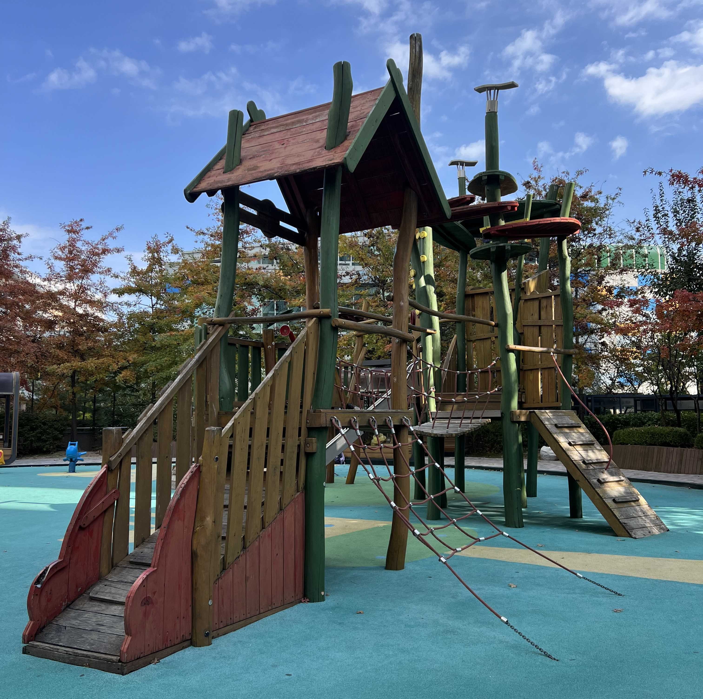
놀이터와 공원은 여가시설에 그치지 않습니다. 아이가 부모의 일정표 밖에서 친구를 만나고 관계를 만들며, 동네를 자기 세계로 넓히는 가장 작은 사회입니다. 놀 공간이 줄면 함께 노는 문화도 함께 줄어듭니다.
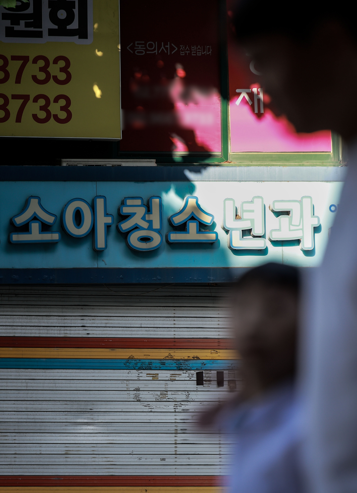
소아청소년과 의원의 간판. 사진=뉴시스병원이 차로 10분 거리여도 인도가 없어 걸을 수 없었고, 야간 진료를 받으려면 대중교통으로 왕복 1시간을 이동해야 하는 가정도 있었습니다. 다른 구의 아동병원까지 차로 20분을 가거나, 동네 소아과가 문을 닫아 평촌까지 이동한다는 답도 나왔습니다.
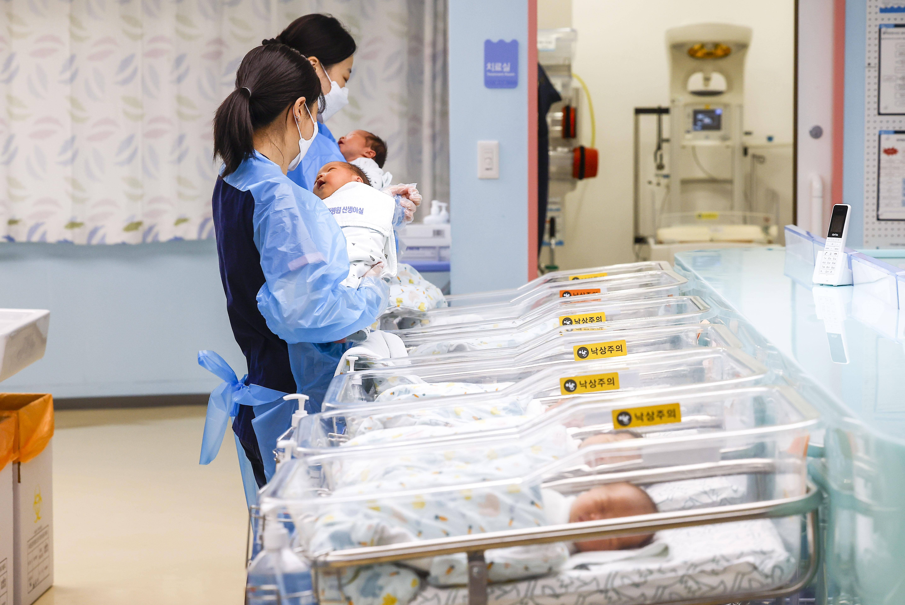
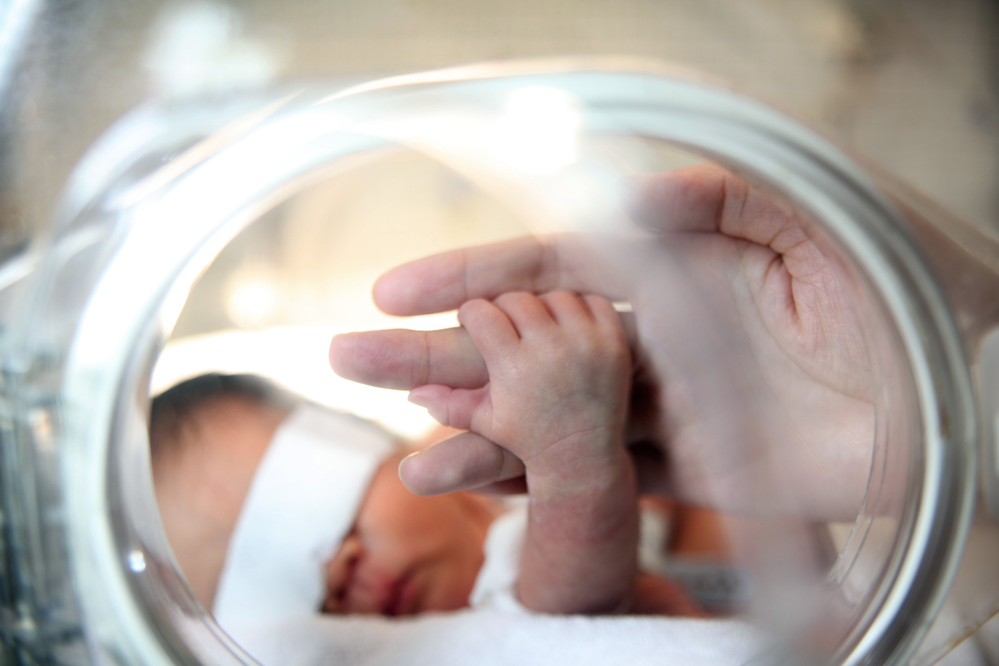
가까운 소아과가 있다는 것과 위급한 순간 필요한 진료에 닿는 것은 다른 문제였습니다. 자동차가 있는지, 밤에 함께 움직일 사람이 있는지에 따라 아이가 받을 수 있는 진료가 달라집니다.
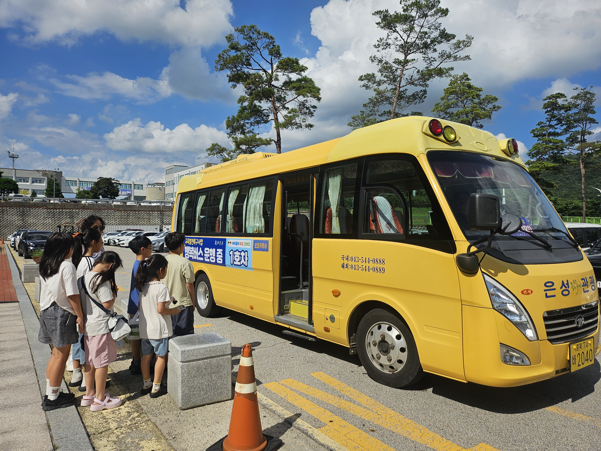
통학버스에 탑승하기 위해 줄 선 어린이들. 사진=뉴시스아파트 밖 영아가 차량으로 어린이집에 가고, 0세반 자리를 구하기 어려워졌다는 답이 나왔습니다. 어린이집을 구하지 못해 이사를 결정한 가정도 있었고, 문 닫는 어린이집과 원아 소개를 부탁하는 교사를 봤다는 보호자도 있었습니다.
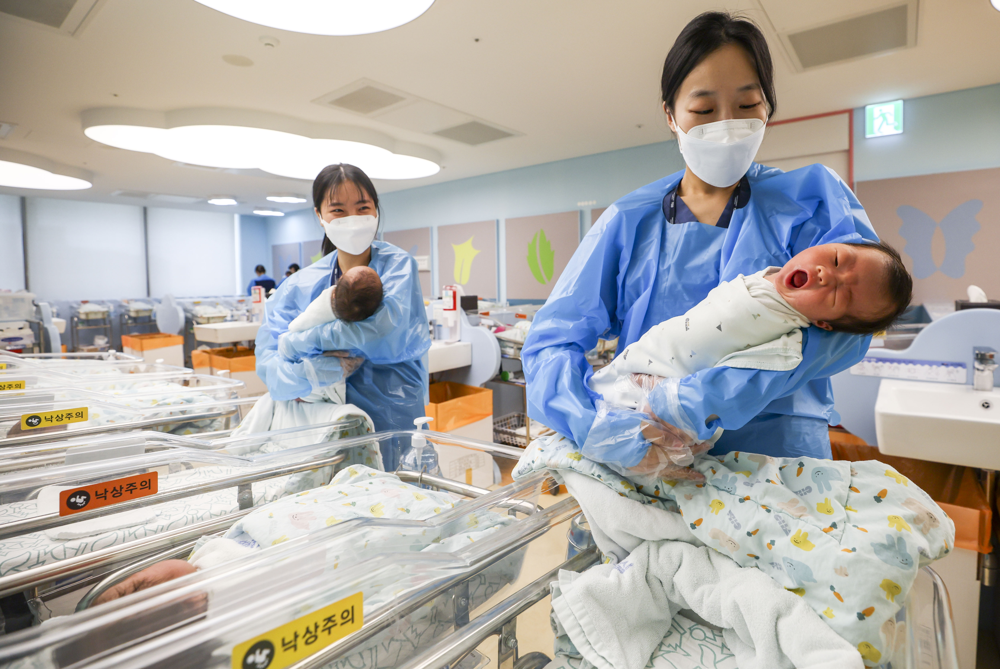
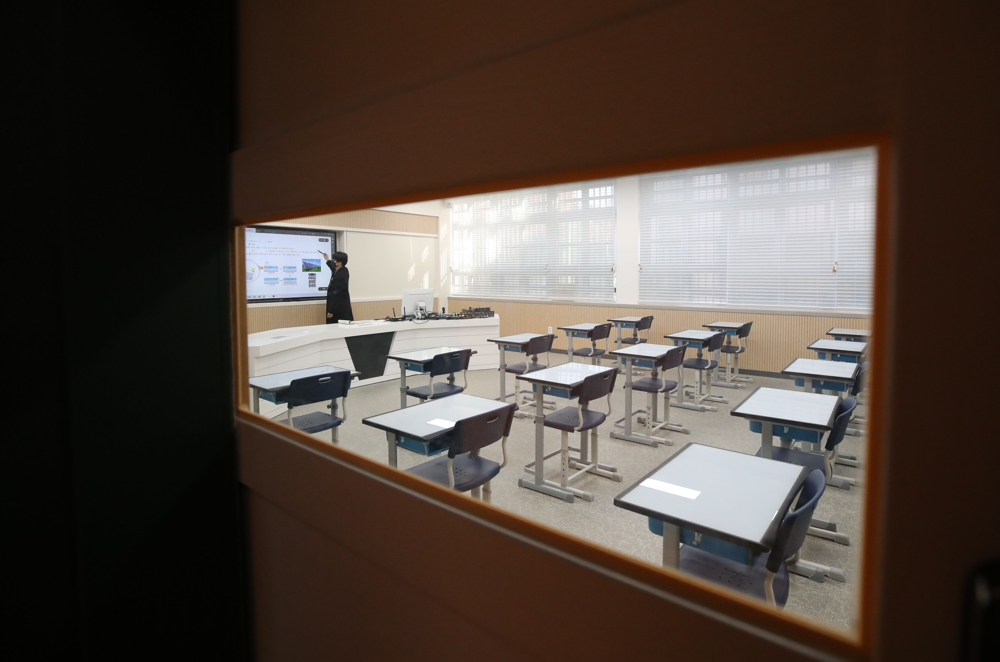
시설 하나가 없어질 때 사라지는 것은 건물 하나가 아닙니다. 보호자는 더 멀리 이동하고, 아이는 친구를 만날 시간을 잃으며, 가족은 때로 거주지를 바꿉니다. 아이 수가 줄수록 남은 한 곳의 역할은 오히려 더 커집니다.
아이들이 자라면 빈자리의 모습도 달라집니다. 어린아이에게 놀이터는 친구를 만나는 공간이지만, 초등학교 고학년이 되면 그곳마저 자기 자리가 아니게 됩니다. 강모씨는 고학년 아이들이 편하게 머물 공간이 부족하고, 맞벌이 가정에서는 돌봄이 끝난 자리를 결국 학원이 대신하게 된다고 말했습니다. 다양한 교육시설은 다른 동네에 있어 차량이 없으면 이용하기 어려운 경우도 있습니다.
교육부는 초등학생 수가 2025년 234만5000명에서 2031년 152만8000명으로 줄 것으로 내다봤습니다. 여섯 해 동안 81만7000명이 줄어드는 셈입니다. 숫자가 줄 때 교실만 비는 것은 아닙니다.
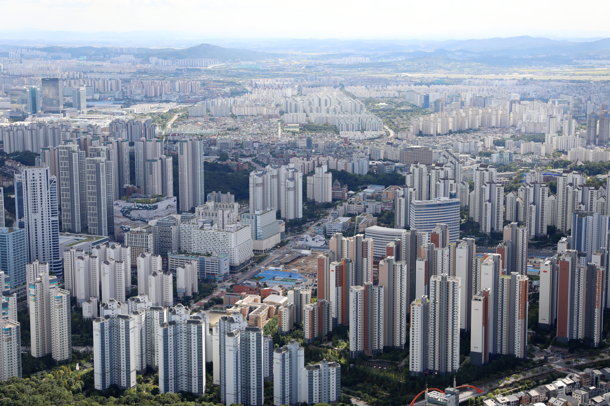
병원 하나, 버스 한 대, 교실 한 칸이 사라지는 순간은 서로 다릅니다. 그래서 인구 변화는 전국의 한 숫자가 아니라, 아이가 매일 통과하는 거리로 읽어야 합니다.
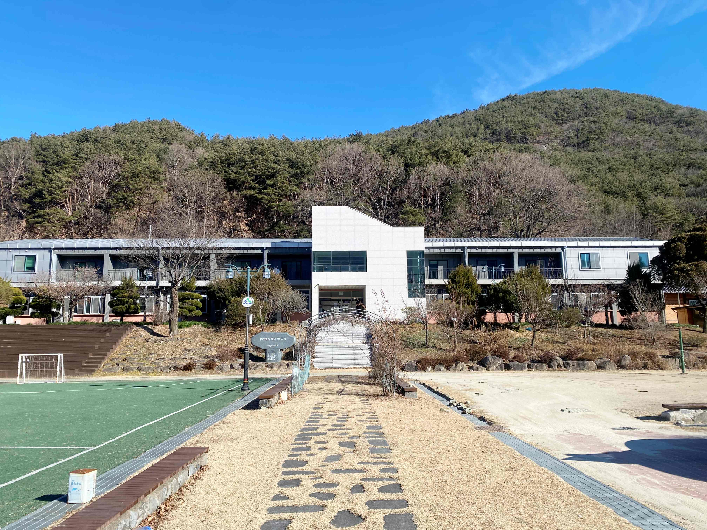
“어떻게 다니라는 건지,
벌써 아이 혼자 등하원할 때가 막막해요.”
어린이집으로 가는 유일한 보행로에 자전거도로가 생겼습니다. 가까운 시설이 있어도 아이가 안전하게 걸어갈 길이 없다면 생활권은 이어지지 않습니다. 병원과 어린이집, 학교까지의 거리는 숫자보다 실제로 걸을 수 있는 길이 있는지가 더 중요했습니다.
같은 시설도 누구에게는 걸어서 닿고, 누구에게는 차가 없으면 갈 수 없습니다. 보호자들의 답변을 병원, 보육, 친구, 그리고 끝까지 남았으면 하는 것으로 나누어 다시 들여다봤습니다.
“맘껏 뛰어놀 수 있는 놀이터, 맘 놓고 맡길 수 있는 보육 공간이 남았으면 합니다.”
아동병원은 다른 구에 있습니다. 아이를 태우고 차로 약 20분을 가야 합니다.
맡길 곳을 찾는 어려움은 결국 이사라는 선택으로 이어졌습니다.
보육의 어려움은 일상의 이동을 넘어 거주지를 바꾸는 결정으로 이어졌습니다.
“아프면 조급한 마음이 생겨요.”
상태가 좋지 않으면 다산의 달빛어린이병원을 찾습니다. 대중교통으로 왕복 1시간, 자가용으로도 왕복 30분입니다.
친구들은 학원으로 이동합니다. 놀이터에서 또래를 보는 시간이 줄었습니다.
아이가 아플 때 갈 병원, 다양한 일을 경험하며 자신의 미래를 찾아볼 기회입니다.
“차로 10분이지만, 걸어서는 갈 수 없는 병원입니다.”
병원까지 인도가 이어지지 않고 주차도 쉽지 않습니다. 가까운 거리와 갈 수 있는 거리는 달랐습니다. 어린이집으로 가는 유일한 보행로에도 자전거도로가 생겼습니다. 최씨는 아이가 혼자 등하원할 때가 벌써부터 막막하다고 했습니다.
아파트 관리동은 가깝지만 빌라·주택의 영아는 차량으로 5~10분을 이동합니다. 최씨가 겪은 0세반은 정원 9명에 대기자가 약 30명이었고, 아파트 거주자가 우선되는 구조 때문에 다른 주거형태의 가정은 통학차량에 더 의존해야 했습니다.
보육 뒤 놀이터에서 2~3시간을 보내도 또래를 만나기 어려워졌습니다. 최씨는 병원이나 놀이시설은 가끔 차로 갈 수 있지만, 매일 가는 학교까지 멀어지면 등하굣길에 친구와 함께 대화하고 추억을 쌓는 시간도 사라질 수 있다고 했습니다.
“친구와 자연 환경은 남았으면 합니다.”
가장 가까운 소아과는 도보 5분, 자주 가는 병원도 차로 2~5분입니다.
또래를 만나기 쉬운 편이고 종종 함께 놉니다. 사라짐이 모두에게 같은 속도로 오지는 않습니다.
‘주변이 사라진다’는 말에서 녹지와 생태계 훼손을 떠올렸습니다.
“놀이터와 공원, 도서관과 운동장은 남았으면 합니다.”
동네 소아과는 도보 5분이지만 소아 응급병원은 가장 멀게 느껴지는 시설입니다. 일상 진료와 응급 진료의 생활권은 달랐습니다.
하원 뒤 놀이터에서 노는 아이가 거의 없습니다. 학교에 가면 학원 일정 때문에 또래를 만나기 더 어려워질 것으로 봤습니다.
아이의 친구 관계가 부모의 관계로 이어지고, 유치원에서는 학부모와 교사의 관계가 갑을처럼 느껴질 때도 있다고 했습니다.
“공원 대신 아파트 단지 안을 이용합니다.”
산업단지 주변의 흡연 구역과 부족한 녹지 때문에 단지 안이 공원 역할을 합니다. 학원은 차량 이동이 필요합니다.
도서관과 문화센터, 서울형 키즈카페가 또래를 자연스럽게 만나는 자리가 됩니다.
서로 다른 문화와 배경의 이웃 사이에서 아이가 편견 없이 어울리며 건강하게 자랄 환경인지 고민합니다.
“놀이터는 아이들이 마음 편히 놀 수 있는 곳이어야 합니다.”
동네 소아과가 문을 닫았습니다. 가벼운 증상은 이비인후과에서, 심하면 평촌까지 차로 갑니다.
주변 어린이집이 줄고, 다니는 어린이집에서도 원아를 소개해 달라는 부탁을 받았습니다.
기물 파손과 음주, 갈등을 겪은 놀이터가 다시 아이들 몫의 공간이 되기를 바랍니다.
“가깝게 살아도 약속을 잡아야 만날 수 있어요.”
어린이 체육 프로그램은 성인보다 적고 신청 경쟁은 치열합니다.
학교와 아파트는 가깝지만 학원과 개인 일정 때문에 친구끼리 시간을 맞춰야 합니다.
동네 뒷산과 이어진 공원, 그리고 위급할 때 닿을 수 있는 대학병원입니다.
“내가 친구여야 아이들도 친구가 되는 상황인 거죠.”
소아과는 5분 거리지만 예약과 긴 대기가 필요합니다. 다른 동네 부모는 차로 20분을 이동하기도 합니다.
원아가 적어지고 놀이터의 초등학생도, 방과 후 아이들끼리 노는 문화도 보기 어려워졌습니다.
비교와 개인화가 깊어져도 아이 곁에 소중한 친구 둘, 셋은 남기를 바랍니다.
“아이들은 얼마나 힘들까, 생각합니다.”
친구들은 오후 3~4시 하원과 동시에 학원차를 탑니다. 놀이터에서 아이를 보기 어려워졌습니다.
부모 없이 놀게 두기 어려운 환경과 거리의 위생을 걱정하며 더 깨끗한 곳으로 옮길 생각도 합니다.
자연, 오래 함께한 친구, 그리고 부딪치며 배우는 사회성이 사라질까 걱정합니다.